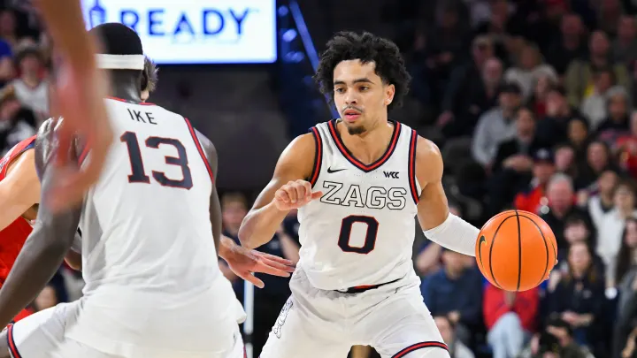

The Gonzaga Bulldogs men's basketball team concluded the 2024-2025 season with a 26-9 record, finishing second in the West Coast Conference (WCC) with a 14-4 conference record. They clinched the WCC Championship, securing their spot in the NCAA Tournament. In the tournament's first round, Gonzaga dominated Georgia with an 89-68 victory, marking their 16th consecutive first-round win. However, their journey was cut short in the second round by a 78-70 loss to the Houston Cougars, ending their streak of nine straight Sweet 16 appearances. Key contributors included forward Graham Ike, who led the team with an average of 17.3 points per game, and point guard Ryan Nembhard, who averaged 10.5 assists per game.
